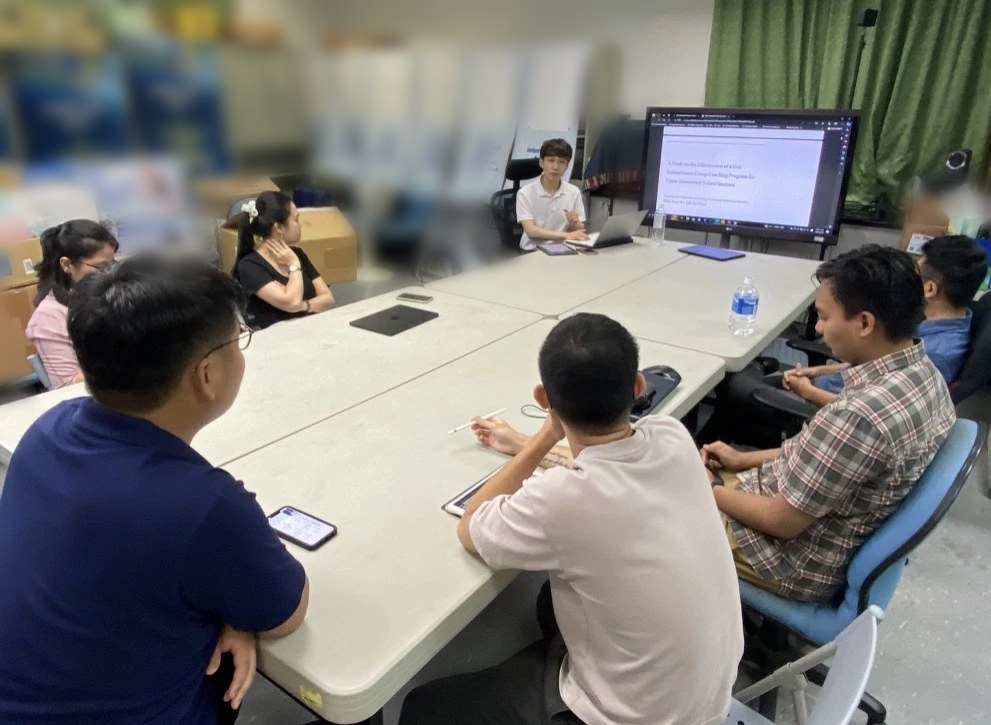

Kim, Y. (2024). A seven-session, three-group quasi-experimental study (n = 24) of a tripartite-grit coaching program. The program group showed significantly greater gains in grit than the comparison and control groups.
Kim, Y., Kim, C., Kang, C., & Kang, M. (2019). Scale development with 163 young adults, resulting in a 15-item, three-factor measure: Agency, Positive Perception of Adversity, and Interpersonal Relationships.
Kim, Y. (2025). An ISBN-registered psychoeducational eBook for people grieving a companion animal, drawing on psychological literature and interviews to explore emotional responses, attachment, and coping.
An exchange I initiated after emailing an NTNU doctoral researcher whose work on grit I had read. I presented and defended my master’s thesis in English with NTNU graduate researchers, and came home with a sharper sense of my study’s limits and how to design the next one.
Kim, Y. (2024).A Study on the Effectiveness of a Grit-Enhancement Group Coaching Program for Upper Elementary School Students. Master’s thesis, Kwangwoon University.
Abstract
This thesis evaluated a seven-session group coaching program based on a tripartite model of grit that includes situational adaptability. Twenty-four upper-elementary students participated in a quasi-experimental design: eight received the tripartite-grit program, eight received a two-factor grit comparison program, and eight formed a no-program control group. Grit and self-directed learning were measured before the program, immediately afterward, and at a two-week follow-up. The tripartite-grit group showed a significantly greater increase in grit than the comparison and control groups. Effects on self-directed learning were not statistically significant. The findings support the program’s potential for strengthening grit in this sample.
Kim, Y., Kim, C., Kang, C., & Kang, M. (2019).Development of the Happiness Habit Scale [Departmental research paper]. Research in Industrial and Organizational Psychology, 26, 150–158. Kwangwoon University, Department of Industrial Psychology.
Overview
Beginning with a 26-item pool, the study analyzed data from 163 young adults using item analysis, internal-consistency analysis, and exploratory factor analysis in SPSS 20.0, resulting in a 15-item, three-factor measure: Agency, Positive Perception of Adversity, and Interpersonal Relationships. The initial 26-item measure showed Cronbach’s α = .808, and criterion-related validity was supported by a significant positive association with the Satisfaction With Life Scale (r = .399, p < .001).
Illustrated project artwork for Memorial Night: Pet Loss Syndrome.
Scholarly product · 2025
Memorial Night: Pet Loss Syndrome
Kim, Y. (2025).Memorial Night: Pet Loss Syndrome (추모의 밤: 펫로스 증후군) [eBook]. ISBN 979-11-982644-0-4.
Overview
This psychoeducational eBook supports people grieving the loss of a companion animal. Drawing on psychological literature and interviews with people who have experienced pet loss, it explores common emotional responses and the ways attachment can shape grief. The guide discusses coping strategies, memorial practices, and approaches to recovery in accessible language. Developed as part of a pet-loss support project, it is intended for bereaved pet owners as well as counselors, educators, and others who support them.
Role: Supervising Counselor & Researcher; supported by Yul Choi, Jimin Sung, and Seojin Lee as research assistants.
Selected presentations · February 2024
From a Coaching Program to the Conference Stage
At the Korean Coaching Psychology Association’s winter conference, I presented my master’s research on a group coaching program designed to strengthen grit among upper-elementary students.
Oral presentation at the Korean Coaching Psychology Association Winter Conference, February 2024.
The question
Can grit be practiced?
My research began with a practical question: how can a child keep working toward a goal while adapting when circumstances change? The seven-session program treated grit as more than persistence alone. It brought together sustained effort, continued interest, and situational adaptability in activities for upper-elementary students.
The evidence
What the study showed
I presented a three-group study with 24 students and assessments before the program, immediately afterward, and two weeks later. Grit improved significantly more in the program group than in the comparison and no-program groups. The effect on self-directed learning was not statistically significant, a useful reminder that gains in one outcome do not automatically extend to another.
Presenting the findings connected a small-group coaching study to a wider question about how motivation and self-management skills might be supported in everyday school settings. Read the thesis summary ↑
Academic exchange · National Taiwan Normal University · August 2024
The Questions I Brought Home from Taipei
It began with a paper on grit and an email to its author. It ended in a seminar room in Taipei, where I presented my master’s research in English to graduate researchers from another country and defended it.
By Yunho Kim · Presenter
With master’s and doctoral researchers at National Taiwan Normal University, Taipei, August 2024.
While working on my thesis, I read a paper on grit by a doctoral researcher at National Taiwan Normal University (NTNU). Our questions overlapped: how persistence and motivation develop, and how they might be supported. I wrote to the author, introduced my own study, and asked whether our groups might meet to share work.
That email became an academic exchange. In August 2024, I joined master’s and doctoral students at NTNU. Each of us presented our research in English, then opened it to discussion and defense-style questioning from the room. A faculty member joined the later part of the session.
Explaining a study to people who owe it nothing is the fastest way to see what it can and cannot claim.

Presenting the thesis, A Study on the Effectiveness of a Grit-Enhancement Group Coaching Program for Upper Elementary School Students.
The presentation
Grit, across cultural contexts
My thesis tested a group coaching program built on a triarchic model of grit. That model adds adaptability to situations to the familiar two factors of perseverance and consistent interest, to better fit interdependent cultural settings. Presenting it in Taiwan, to researchers who think about motivation in another East Asian context, made the cultural argument feel less like a footnote and more like a live question.
Translating the study into English for an unfamiliar audience also forced a discipline I value: stating the design, the effect, and its boundaries plainly, without leaning on shared assumptions.
What I took back
A clearer map of my study’s limits, and how I would design the next one
Defending the work made its limitations concrete. It also turned them into design principles I now carry into any future study, whatever the topic.
Comparable groups.My control group came from a different site and grade range. Next time, I would plan for randomization or closely matched comparison groups from the start.
More than self-report.Grit was measured only by students’ own ratings. Teacher reports, behavioral indicators, or observation would give a fuller and less biased picture.
Longer follow-up.A two-week follow-up cannot show whether new habits last. A durable change needs months of tracking.
Separating roles.I delivered the program I was evaluating. Independent facilitators or blinded assessment would reduce that risk.
Power and scale.With 24 students, small effects were hard to detect. Planning sample size in advance would make null results more informative.
The room itself
A culture of open questioning
What stayed with me as much as the feedback was the atmosphere. Students challenged one another directly and generously. When the professor joined, the conversation did not turn into a lecture. The relationship between faculty and students felt collegial and horizontal, with ideas weighed on their merits. It was the kind of research community I hope to learn in: one where asking a hard question is a form of respect.
The exchange also taught me something about how scholarship grows. It started because I read someone’s work closely and reached out. I intend to keep doing that.